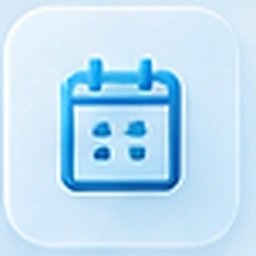
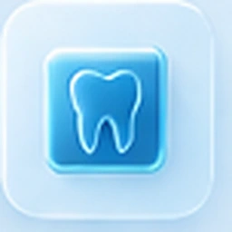
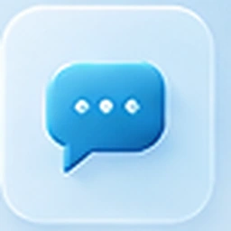
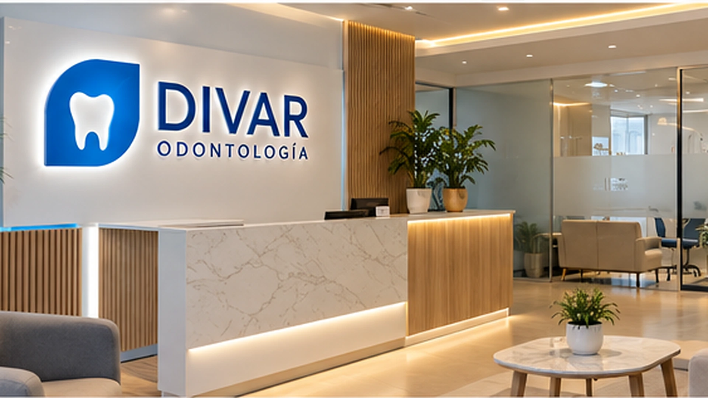
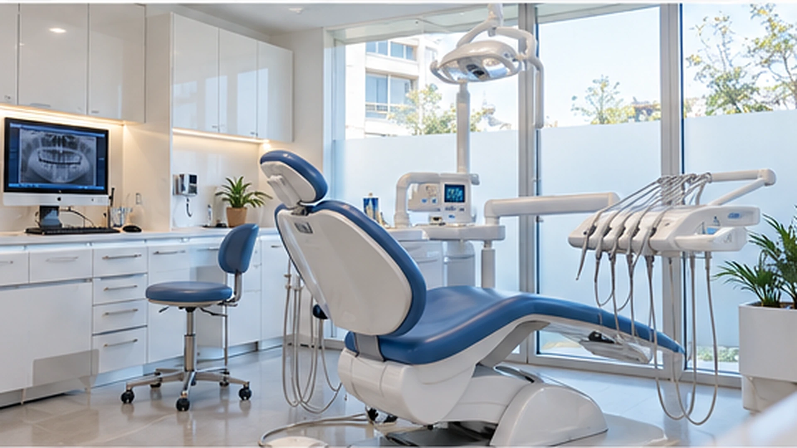
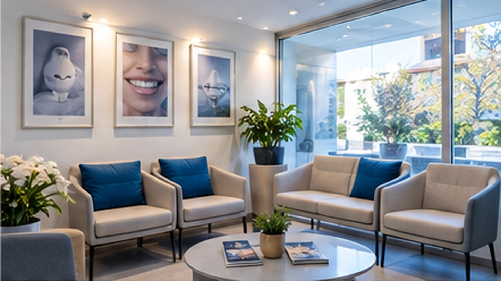
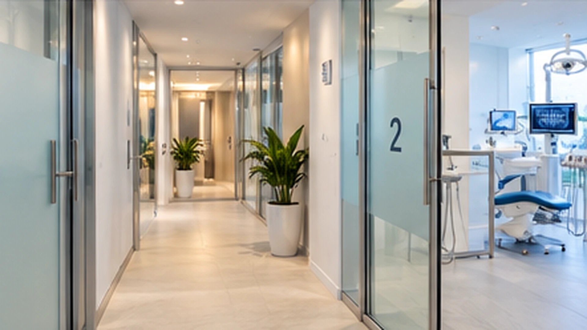
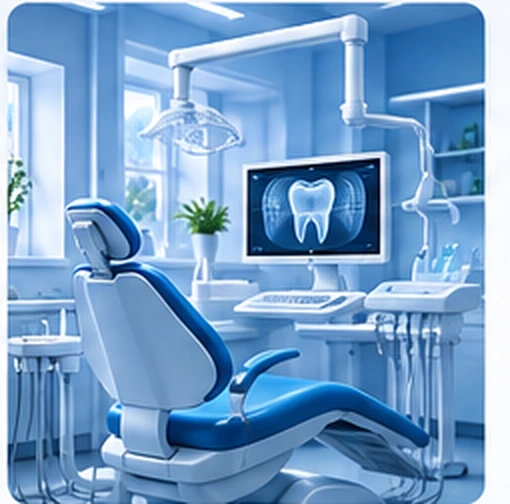

Registramos tu correo
Puede ser Gmail u otro correo personal. El consultorio no solicita ni conoce la contraseña de tu cuenta de Google.
Reservá y gestioná turnos, consultá tu plan de tratamiento, historial, estudios, mensajes y pagos desde la misma cuenta, en la web o instalada como app.

Turnos sin llamadas
Estudios y documentos
Comunicación con el consultorioRecepción, sala de espera y boxes equipados. Las imágenes son de referencia hasta cargar las fotografías definitivas de la sede.




La información es orientativa. La indicación definitiva surge de la evaluación profesional y queda registrada en tu plan personal.

Puede ser Gmail u otro correo personal. El consultorio no solicita ni conoce la contraseña de tu cuenta de Google.
La usás solo para el primer ingreso. Es independiente de tu correo y vence después de utilizarla.
Desde ese momento administrás turnos, tratamientos, documentos, mensajes y pagos desde web o app.
Importante: nunca ingreses la contraseña de Google dentro de un formulario de DIVAR. En producción, el acceso con Google debe realizarse mediante OAuth oficial.
Los nombres, matrículas y especialidades visibles en esta demostración deben reemplazarse por los datos reales del equipo DIVAR.
El portal usa una única sección de Turnos como fuente de verdad. El inicio muestra solamente el próximo turno y un acceso para gestionarlo. Todo lo demás se organiza por función.
La versión final debe conectarse con el sistema de agenda y la historia clínica del consultorio.
Solicitá tu primera consulta. Una vez validado tu registro, el consultorio podrá enviarte el acceso temporal al portal.